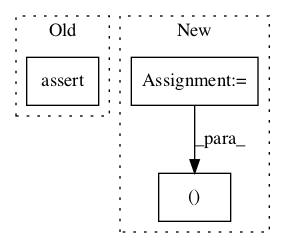

8cdbb1637b140c01f431831e7b2c2a63afc96209,kapre/time_frequency.py,Spectrogram,__init__,#Spectrogram#Any#Any#Any#Any#Any#Any#Any#,70
Before Change
"n_dft should be > 1 and power of 2, but n_dft == %d" % n_dft
)
assert isinstance(trainable_kernel, bool)
assert isinstance(return_decibel_spectrogram, bool)
assert padding in ("same", "valid")
if n_hop is None:
n_hop = n_dft // 2
After Change
self.window_fn = window_fn
self.pad_end = pad_end
idt , odt = input_data_format, output_data_format
self.output_data_format = K.image_data_format() if odt == "default" else odt
self.input_data_format = K.image_data_format() if idt == "default" else idt
In pattern: SUPERPATTERN
Frequency: 4
Non-data size: 3
Instances Project Name: keunwoochoi/kapre
Commit Name: 8cdbb1637b140c01f431831e7b2c2a63afc96209
Time:
Author: null
File Name: kapre/time_frequency.py
Class Name: Spectrogram
Method Name: __init__
Project Name: tensorflow/models
Commit Name: 8da4857396fcedb1abd19a08cd4de40d16c7bc50
Time:
Author: null
File Name: research/audioset/yamnet/yamnet_test.py
Class Name: YAMNetTest
Method Name: clip_test
Project Name: tensorpack/tensorpack
Commit Name: 999846b2763b60f70df53f5844ef07857cf5f5aa
Time:
Author: null
File Name: examples/FasterRCNN/data.py
Class Name: TrainingDataPreprocessor
Method Name: get_anchor_labels
Project Name: tensorlayer/tensorlayer
Commit Name: 3d305831a0edd1288cc2f94f81debbdc359d7bb3
Time:
Author: null
File Name: tensorlayer/layers/lambda_layers.py
Class Name: Lambda
Method Name: __init__